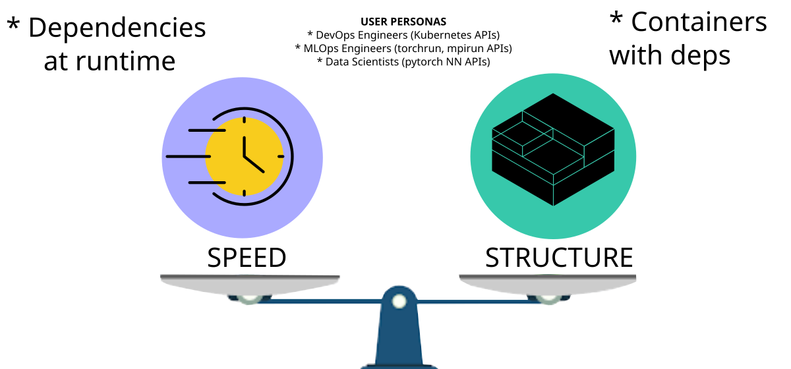
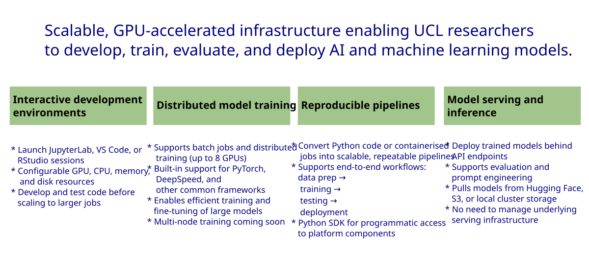
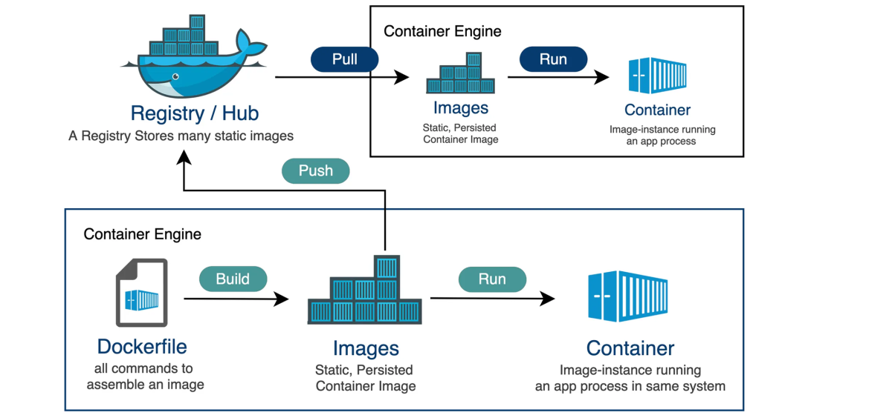
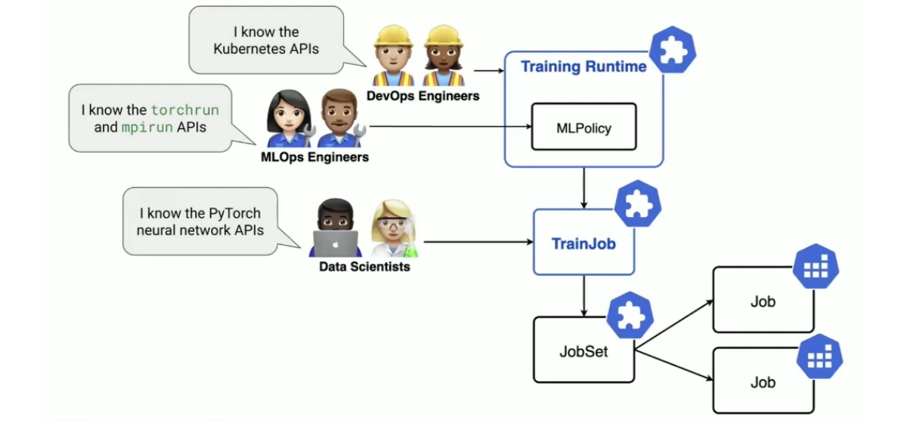
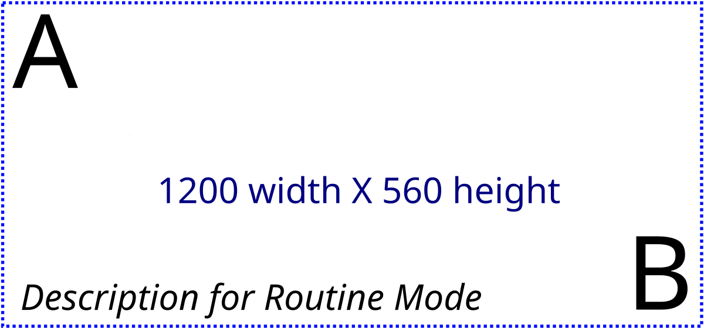

Speed vs Structure: Building Reproducible AI Workflows with the UCL Unified AI Research Platform
Matthias J. Golomb, David Guzman, Andrew Esterson, Sylvie Da Graca Ramos, Miguel Xochicale · UCL-ARC
RSECon26, 9–11 September 2026, Sheffield, UK · web-animations 2025 by mxochicale
Overview
What We’ll Cover
Key Themes
☁️ Cloud keywords
keyword1, keyword2, keyword3
🤖 Robotics keywords
keyword1, keyword2, keyword3
👥 Collaborative keywords
keyword1, keyword2, keyword3
Introduction
Containerising AI workflows
Building Reproducible AI Workflows

Figure 1: Reproducibility is a tradeoff between iteration speed and environment guarantees
UCL Unified AI Platform for Research

Figure 2: Unified AI Platform
Unified AI Platform for Research: https://www.ucl.ac.uk/advanced-research-computing/platforms-services/unified-ai-platform-research/
Building docker images
Add Subtitle
UAI: GitHub Container Registry Workflow

Figure 3: Worflow for GitHub Container Registry
Dockerfiles
Dockerfile
# syntax=docker/dockerfile:1.7
FROM docker.io/pytorch/pytorch:2.9.1-cuda12.8-cudnn9-devel
RUN mkdir -p /workspace && chmod -R 777 /workspace
WORKDIR /workspace
COPY requirements.txt .
RUN /opt/conda/bin/python -m pip install --upgrade pip && \
/opt/conda/bin/python -m pip install --no-cache-dir -r requirements.txt
COPY . .
CMD ["/opt/conda/bin/python"]Training models
Add Subtitle
UAI Kubeflow Trainer: User personas and capabilities

Figure 4: User Personas in Kubeflow Trainer
An overview of Kubeflow Trainer: https://www.kubeflow.org/docs/components/trainer/overview/
Training EDM2 Model (kubeflow 0.3.0)
training-edm2-model-ghcr.ipynb
# https://github.com/xfetus/fetal-ultrasound-edm2/blob/main/unified-ai/training-edm2-model-ghcr.ipynb
## Set how many PyTorch nodes you want to use for distributed training.
NUM_NODES = 1
# Set the resources for each PyTorch node.
RESOURCES_PER_NODE = {
"cpu": "4", # CPUs per node
"memory": "64Gi", # Memory in GiB per node (tried 2Gi CrashLoopBackOff/OOMKilled), 64Gi works
"nvidia.com/gpu": 1, # GPUs per node (the number will depend on the available resources)
}
GITHUB_CONTAINER_REGISTRY = "ghcr.io/xfetus/fetal-ultrasound-edm2/fetal-ultrasound-edm2-distributed-learning:v0.1.1"
command = TrainerCommand(
command=[
"torchrun",
f"--nnodes={NUM_NODES}",
"train_edm2.py", #path of script in scratch
"--outdir", "/scratch-volume/FETAL_PLANES_DB/OUTPUT_DIRECTORY", # pragma: allowlist secret
"--data", "/scratch-volume/FETAL_PLANES_DB", # pragma: allowlist secret
"--batch", "4",
"--preset", "edm2-img512-s",
"--batch-gpu", "4",
]
)
job_id = trainer.train(
runtime=torch_runtime,
trainer=CustomTrainerContainer(
image=GITHUB_CONTAINER_REGISTRY,
num_nodes=NUM_NODES,
resources_per_node=RESOURCES_PER_NODE,
env=ENV_VARS
),
options=[command, pod_template_overrides],
)
training-edm2-model-scratch-volume.ipynb
# https://github.com/xfetus/fetal-ultrasound-edm2/blob/main/unified-ai/training-edm2-model-scratch-volume.ipynb
## Set how many PyTorch nodes you want to use for distributed training.
NUM_NODES = 1
# Set the resources for each PyTorch node.
RESOURCES_PER_NODE = {
"cpu": "4", # CPUs per node
"memory": "64Gi", # Memory in GiB per node (tried 2Gi CrashLoopBackOff/OOMKilled), 64Gi works
"nvidia.com/gpu": 1, # GPUs per node (the number will depend on the available resources)
}
GITHUB_CONTAINER_REGISTRY = "ghcr.io/xfetus/fetal-ultrasound-edm2/fetal-ultrasound-edm2-distributed-learning:v0.0.1"
# VERSION_ID=v0.0.1 #FROM docker.io/pytorch/pytorch:2.9.1-cuda12.8-cudnn9-devel / RUN mkdir -p /workspace && chmod -R 777 /workspace
# RUN mkdir -p /.cache/pip /.local && chmod -R 777 /.cache/pip /.local
command = TrainerCommand(
command=[
"bash", "-c",
(
# Create writable dirs
"mkdir -p /scratch-volume/pip-packages "
"/scratch-volume/torch-inductor-cache "
"/scratch-volume/home && "
# Install deps exclude torch/torchvision (already in base image)
# Use --upgrade to overwrite stale packages from previous runs
"pip install "
"pandas "
"accelerate "
"basicsr "
"diffusers "
"einops "
"scikit-learn "
"--target=/scratch-volume/pip-packages "
"--upgrade "
"--no-cache-dir "
"--quiet && "
# Set cache env vars inline to guarantee they're set before torchrun
"export HOME=/scratch-volume/home && "
"export TORCHINDUCTOR_CACHE_DIR=/scratch-volume/torch-inductor-cache && "
"export PYTHONPATH=/scratch-volume/pip-packages:$PYTHONPATH && "
"torchrun /scratch-volume/fetal-ultrasound-edm2/train_edm2.py "
"--outdir /scratch-volume/FETAL_PLANES_DB/OUTPUT_DIRECTORY "
"--data /scratch-volume/FETAL_PLANES_DB "
"--batch 4 "
"--preset edm2-img512-s "
"--batch-gpu 4"
)
]
)
job_id = trainer.train(
runtime=torch_runtime,
trainer=CustomTrainerContainer(
image=GITHUB_CONTAINER_REGISTRY,
num_nodes=NUM_NODES,
resources_per_node=RESOURCES_PER_NODE,
env=ENV_VARS
),
options=[command, pod_template_overrides],
)
Reproducing results
Diffusion-based synthesis (512×512)

Figure 5: Representative fetal ultrasound images from real data, Tian et al. [22], and our proposed high-resolution (512×512) diffusion-based synthesis approach.
Mannering et al. 2026 in MIUA 2026 (https://arxiv.org/abs/2608.05471)
Reproduce this work
Get running in three steps
- Clone the repo — everything here (code, data, this deck) lives in one place
- Build the environment —
Dockerfile/environment.ymlincluded - Run the notebook or pipeline — outputs regenerate the figures in this talk
📦 #### What’s included - Source code + tests - Reproducible environment - Example data / demo notebook - This slide deck (Quarto)
Conclusions, Future Work & Next Steps
Github: Getting started docs

Figure 6: Getting started documentation provide with a range of links to setup, use, run and debug application including github workflow.
Sciortino et al. 2017 in Computers in Biology and Medicine https://doi.org/10.1016/j.compbiomed.2017.01.008 He et al. 2021 in Front. Med. https://doi.org/10.3389/fmed.2021.729978
Appendix
Extra slides for Q&A
Title of the slide
- Bullet point 1
- Bullet point 2
- Bullet point 3
- Bullet point 3.1
- Bullet point 3.2
Sciortino et al. 2017 in Computers in Biology and Medicine https://doi.org/10.1016/j.compbiomed.2017.01.008 He et al. 2021 in Front. Med. https://doi.org/10.3389/fmed.2021.729978
Github: Getting started docs
Figure 7: Getting started documentation provide with a range of links to setup, use, run and debug application including github workflow.
Sciortino et al. 2017 in Computers in Biology and Medicine https://doi.org/10.1016/j.compbiomed.2017.01.008 He et al. 2021 in Front. Med. https://doi.org/10.3389/fmed.2021.729978